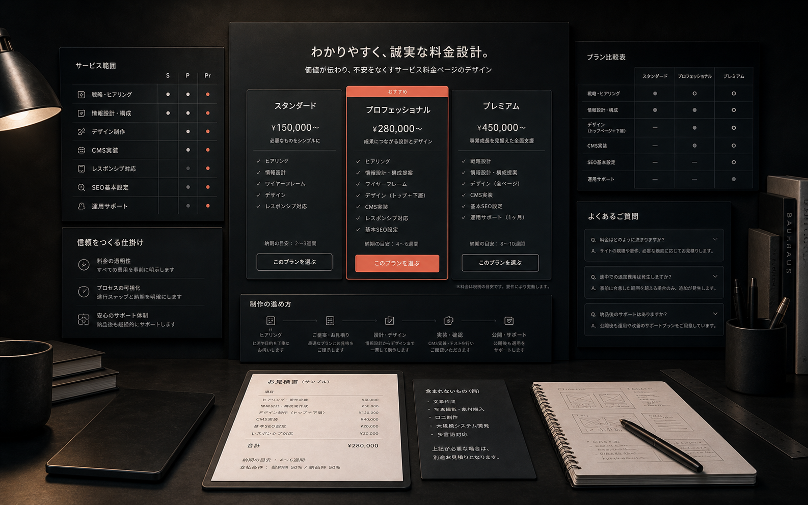

価格の前に含まれる範囲を示す
同じLP制作でも、戦略設計、撮影、実装、CMS、保守の有無で価値は大きく変わります。金額の横に範囲を書くだけで、比較される軸を整えられます。
プラン比較は“誰向けか”で分ける
安い・高いだけの比較ではなく、短期公開したい人、ブランドから整えたい人、記事運用まで見たい人など、状況別にプランを見せます。
不安を先回りして書く
追加費用、修正回数、納期、素材準備、支払い条件。問い合わせ前に気になることを先に書くと、相談の質が上がります。
Branding / Service Page
価格は離脱要因にも信頼材料にもなります。金額だけを置くのではなく、範囲、進め方、判断基準を一緒に見せます。

同じLP制作でも、戦略設計、撮影、実装、CMS、保守の有無で価値は大きく変わります。金額の横に範囲を書くだけで、比較される軸を整えられます。
安い・高いだけの比較ではなく、短期公開したい人、ブランドから整えたい人、記事運用まで見たい人など、状況別にプランを見せます。
追加費用、修正回数、納期、素材準備、支払い条件。問い合わせ前に気になることを先に書くと、相談の質が上がります。